GALERI
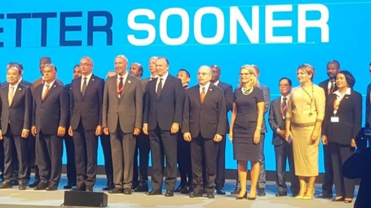 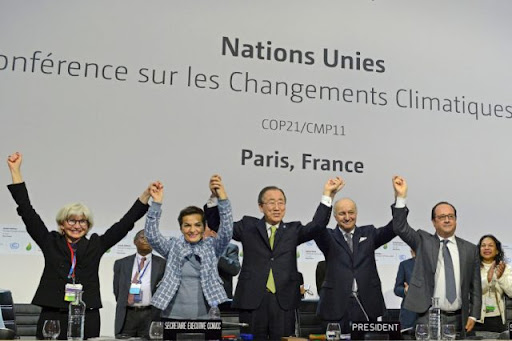
 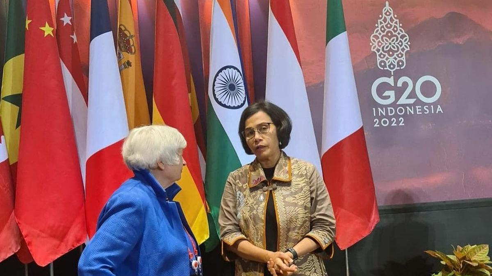
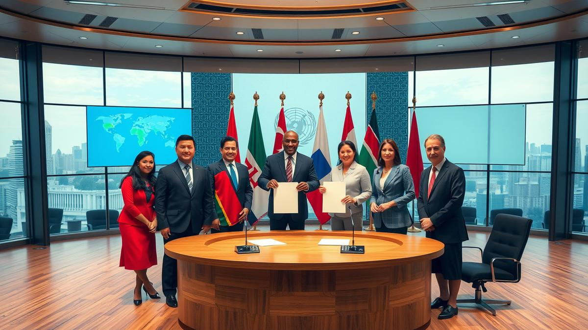
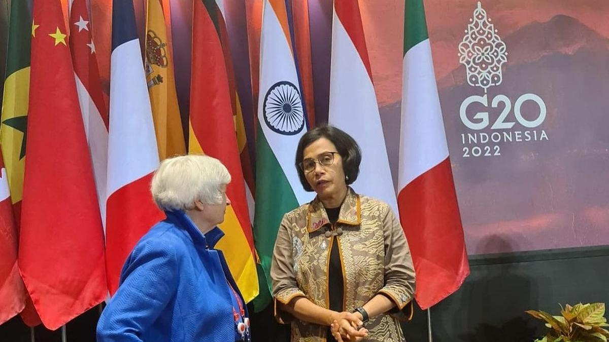
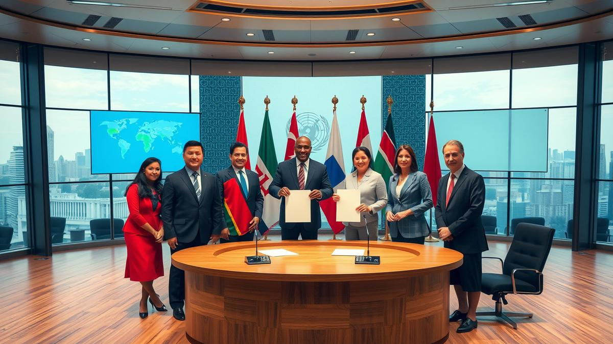
 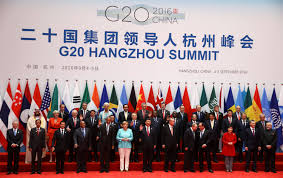
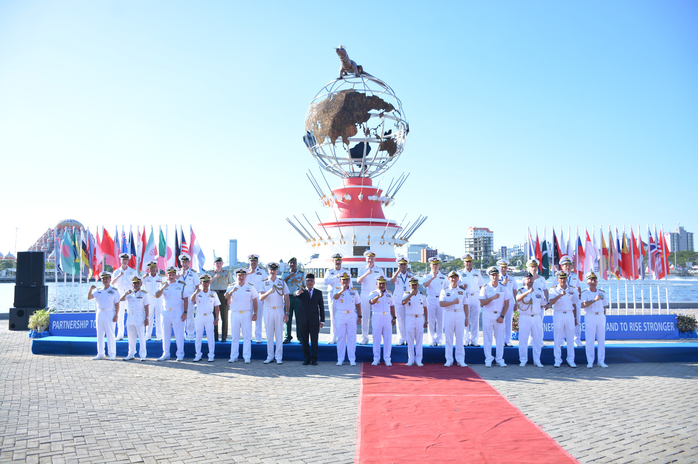
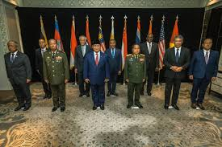
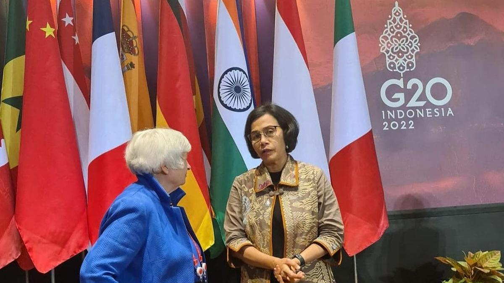
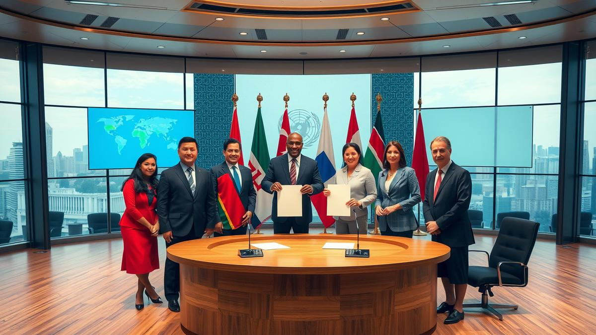
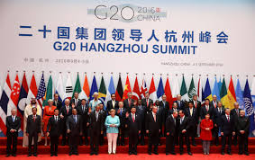
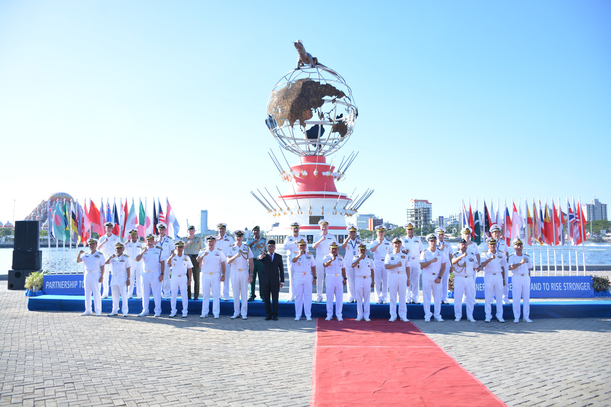
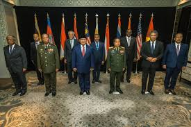
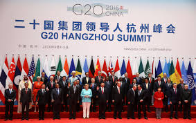
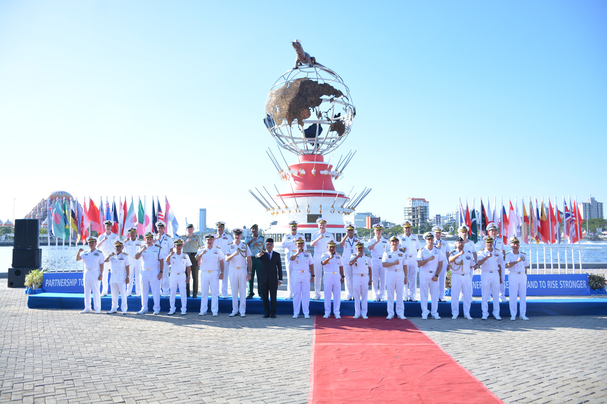
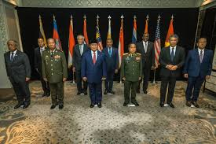
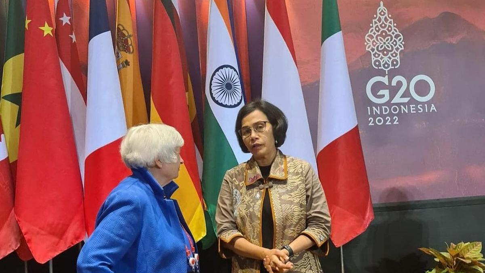
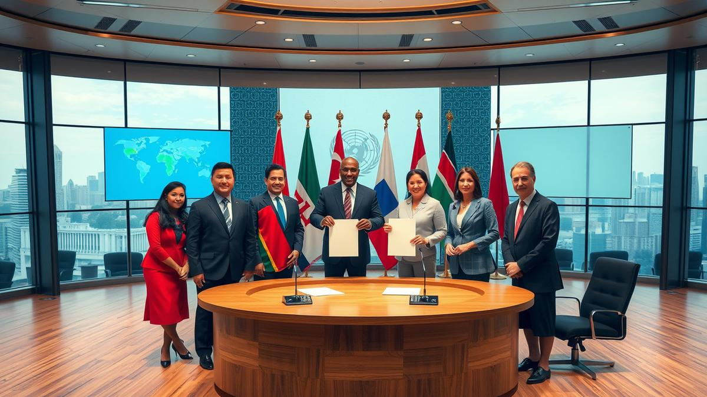
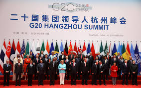
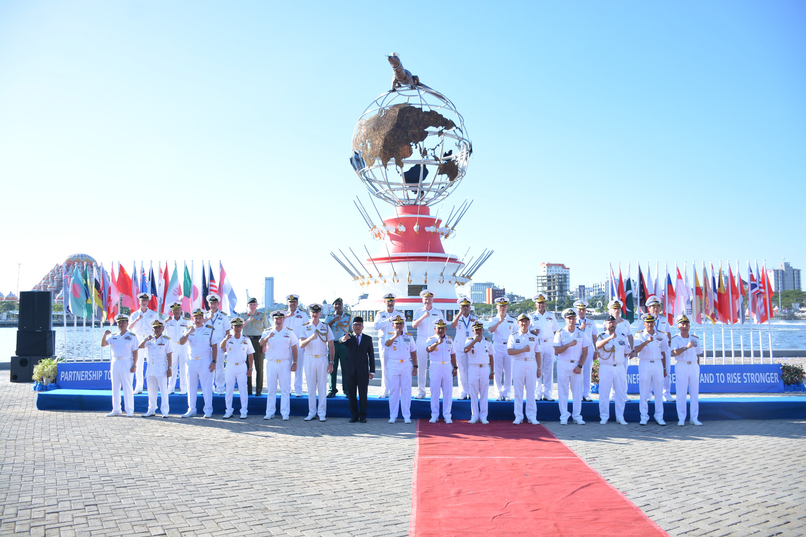
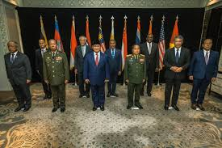
Kerjasama multilateral merupakan salah satu bentuk kerjasama internasional yang melibatkan tiga negara dalam forum atau perjanjian multilateral atau bisa lebih dalam bentuk organisasi untuk mencapai tujuan bersama dalam berbagai bidang dan untuk kepentingan tertentu. Kerja sama ini tidak ada kaitan dengan wilayah-wilayah tertentu, bahkan sifat kerja sama ini adalah global dan ditetapkan bersama. Sedangkan untuk organisasi, umumnya bersifat global atau menyeluruh. Berikut ini contoh bidang dari isu-isu negara beserta organisasinya; Bidang Ekonomi dan Perdagangan (World Trade Organization/WTO, G20), Bidang Kesehatan (World Health Organization/WHO), Bidang Pendidikan dan Budaya (United Nations Educational, Scientific and Cultural Organization/UNESCO), Bidang Politik dan Keamanan (Perserikatan Bangsa-Bangsa/PBB, North Atlantic Treaty Organization/NATO), dan Bidang Lingkungan (United Nations Framework Convention on Climate Change/UNFCCC). Di era globalisasi saat ini, kerjasama multilateral menjadi semakin penting dalam mengatasi berbagai tantangan secara global yang kompleks.
Tujuan utama dari kerja sama multilateral: Menciptakan perdamaian dan
keamanan
dunia, Mempererat hubungan antar negara, Menetapkan standar dan aturan global di berbagai bidang, Dapat
meningkatkan kualitas sumber daya manusia, dan
banyak hal lain.
Tujuan khusus dalam per-bidang: Meningkatkan dan membantu petumbuhan
ekonomi
dunia, Menambah pengetahuan teknologi dan informasi dari setiap negara, Mengatasi isu global (SDGs),
Memberikan bantuan kemanusiaan dan pembangunan, dan masih banyak lagi menyesuaikan bidangnya.
1. Perjanjian Paris (Paris Agreement): Perjanjian Paris adalah perjanjian
internasional yang dilaksanakan seluruh
negara dalam mengatasi perubahan iklim. Perwakilan Indonesia, yaitu Menteri Lingkungan Hidup dan
Kehutanan Dr. Siti Nurbaya, telah mendatangi dan menandatangani perjanjian ini
pada Upacara Tingkat Tinggi Penandatanganan Perjanjian Paris (high-level Signature Ceremony for the
Paris
Agreement) yang diadakan di Markas Besar PBB, New York, Amerika Serikat dan pada hari Jumat,
22 April
2016. Acara ini dibuka oleh Sekjen PBB, Ban Ki Moon, yang menyelenggarakan upacara tersebut sesuai
mandat dari Konferensi Para Pihak ke-21 Konvensi-Kerangka Perubahan Iklim (UNFCCC COP-21) bulan Desember
2015. Perjanjian Paris ini merupakan kesepakatan global dalam mengahdapi perubahan iklim, di mana
negara-negara berkomitmen melalui Nationally Determined Contribution (NDC) untuk periode
2020-2030,
serta aksi pra-2020. Perjanjian Paris berlaku bila setidaknya ada 55 negara yang menyumbangkan 55% emisi
gas rumah kaca. Komitmen Indonesia sesuai persetujuan Paris dalam upaya menjaga kenaikan suhu global
yaitu pengurangan emisi Gas Rumah Kaca (GRK) pada tahun 2030 sebesar 31,89% dengan upaya sendiri dan
sebesar 43,20% dengan bantuan internasional atau negara lain. Kinerja Indonesia mengurangani emisi GRK
melalui REDD+ telah mendapatkan pengenalan internasional, salah satunya oleh UNFCCC, yang diwujudkan
melalui pembayaran berbasis
kinerja / Result-Based Payment (RBP). Pada saat ini Indonesia tercatat sebagai negara yang
menerima RBP
paling besar, dengan total komitmen RBP sebesar 439,8 Juta USD, di mana dari total komitmen tersebut
Indonesia telah menerima pembayaran sebesar 279,8 Juta USD.
Dengan itu, adapun cara masyarakat
berpartisipasi aktif dalam penanganan dan adaptasi oleh perubahan iklim dengan Program Kampung
Iklim (ProKlim).
2. G20 Pembahasan Perubahan Iklim: Pembahasan Penanganan Perubahan Iklim G20 memiliki latar belakang terkait isu perubahan iklim yang menjadi perhatian dunia saat ini. Salah satu kerja kelompok atau Working Group yang membahas permasalahan ini ialah Climate Sustainability Working Group (CSWG). CSWG merupakan working group dalam Sherpa Track yang telah dimulai sejak tahun 2018 pada saat presidensi Argentina. Diskusi yang diangkat dalam CSWG utamanya adalah terkait dengan upaya peningkatan adaptasi dan pembangunan ketahanan terhadap perubahan iklim.
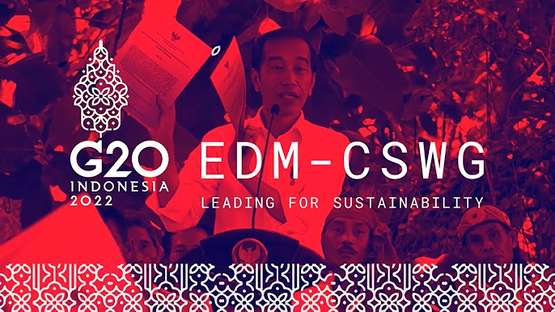